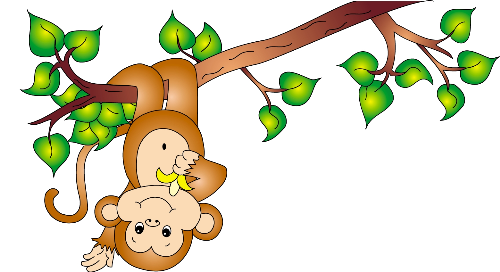

Tản Mạn Đầu Xuân

ã thành lệ từ lâu cứ mỗi độ xuân về khi năm mới cầm tinh con vật nào trong 12 con giáp thì đa phần các tờ báo xuân hầu hết đều có bài viết về con vật cầm tinh năm đó.

Năm Bính Thân ( 2016 ) đang ngấp nghé trước thềm, cái không khí ngày xuân đang dần dần trở lại trên quê hương mình, và Tết con Khỉ sẽ đến với mọi nhà mọi người, với ước vọng con Khỉ này nó sẽ nhanh nhẹn giúp cho mọi người hoàn thành sớm những ước mơ bấy lâu nay ấp ủ trong lòng sẽ biến thành hiện thực.
Là con vật ít có khi nào ngồi thụ động một chổ, hết buông cái này thì bắt cái kia, lí lắc phá phách nghịch ngợm vô cùng vì vậy trẻ con đứa nào hiếu động phá phách khi bị người lớn quỡ phạt thường nói:
- Sao mấy đứa liếng khỉ quá vậy?
Ấy là nói theo kiểu dân miền nam, còn theo dân miền bắc thì:
- Sao chúng mầy làm trò khỉ mãi thế kia?
Khỉ là loài động vật có họ hàng gần gũi với con người nhiều nhất, nhưng coi vậy có lúc người ta cho khỉ là loài vô tích sự nên mới có câu:
"Nuôi ong tay áo, nuôi khỉ dòm nhà ".
Nhưng nói như vậy cũng hơi oan cho Khỉ, vì ngoài trí thông minh khỉ ta có lắm tài vặt mà không phải loài nào cũng làm được, như trong những rạp xiếc lưu động trình diễn khắp nơi thì tiếc mục xiếc khỉ thì không thể thiếu vì đa phần mọi người thường thích xem khỉ làm trò khỉ, tôi còn nhớ dạo nọ được anh bạn thân cùng xóm có chân trong một đoàn xiếc nọ tặng cho cặp vé mời đi xem xiếc, thú thật mấy chục năm kể từ sau cái ngày 30 tháng tư năm 75 đến lúc bấy giờ tôi chưa được lần nào xem lại xiếc thú, cùng lắm là được xem trên Ti vi màn hình trắng đen cà giật cà chóp màn hình liên tục, họ chiếu những đoạn xiếc của các nghệ sỹ Liên xô, các tiết mục xiếc thú hấp dẩn vô cùng, mấy năm bao cấp mà được xem những chương trình như vậy thì đáng đồng tiền bát gạo, nên khi cầm 2 tấm thiệp mời trên tay tôi háo hức vô cùng, chiều hôm đó tôi chở thằng cháu ra công viên nơi rạp xiếc đóng đô. Hai ông cháu say sưa với các con thú làm xiếc, nào Gấu, sư tử, ngựa. V.v.. nhưng tiết mục hai ông cháu tui khoái chí tử là món xiếc khỉ, hai chú khỉ trẻ nhào lộn tung hứng, đi xe đạp một bánh, nhưng đến tiếc mục bắt chước chủ của nó hút thuốc rành rọt như con người khiến khán giả thán phục cách bắt chước của loài này, vì thế lúc còn nhỏ tui nghe ba tui kể lại có nhà nọ( ngày xưa toàn nhà tranh vách lá) ông chủ nhà có nuôi con khỉ con trông rất dễ thương, ông cưng nó lắm, tuy vậy ông cũng xích nó lại bên cạnh cái tủ thờ, muốn cho vật cưng của mình không phải bị cảnh gò bó tù túng ông cho dây xích thòng khá dài nên chú khỉ có dịp khiều móc phá phách nọ kia, lúc thì nó đập cái bình tích nước trà tan tành. Lúc thì nó xô ngã chiếc xe đạp dựng gần đó nhưng khỉ nhà ta chẳng bao giờ bị phạt. Có một hôm khi thấy ông dùng hộp quẹt diêm để đốt nhang cúng ông bà, sơ ý ông quên dẹp cái hộp quẹt nọ nên đêm đó khi cả nhà ông chuẩn bị chun vô mùng làm một giấc cho lại sức thì căn nhà phát cháy ngay tấm vách lá phía sau lưng bàn thờ. Thì ra chú khỉ nhà ta bắt chước ông chủ đốt nhang nó chộp cái hộp quẹt quẹt liền, khi ánh lửa trên que diêm cháy lóe sáng khiến chú giật mình, theo phản xạ chú quăng cái que diêm vô vách lá khiến căn nhà phút chốc thành đóng tro tàn, mà cũng lạ, cửa nhà cháy hết không biết ông có xót xa hay không? Bà con lối xóm thấy ông dùng cành cây nhỏ bươi đống tro tàn tìm "hài cốt" thủ phạm gây ra vụ cháy nhà để chôn cất, qua hành động trên ông bị bà con nói ra nói vô:
- Ông Sáu này ổng Hâm hay sao ấy, con Khỉ thôi mà làm gì mà kinh thế.
Một ông đứng kề bên chen vô nói:
- Hâm gì mà hâm, tại ổng mến tay mến chưn con khỉ nên ổng làm (dậy) phải rồi bà ơi! Nói ổng Hâm hâm gì đó nghe được ổng buồn tội nghiệp. May mà không có xãy ra chết người từ đó về sau trong xóm nọ chẳng thấy ai dám nuôi các chú khỉ dễ thương trong nhà nữa.
Vào thập niên tám mươi, lúc này thì mấy ông nhà nước cho " mở cửa " giao tiếp với thế giới nên truyền hình cũng có vài bộ phim nhiều tập chiếu cho bà con giải trí khi đêm về, băng tầng số 9 và băng tần số 7 của đài truyền hình Sài gòn( nằm trên đường Hồng Thập Tự ngày xưa nay thay bằng đường Xô Viết Nghệ Tỉnh)thay nhau chiếu nhưng bộ phim truyện nhiều tập. Như Vùng đất thủ lĩnh rồng, Maika cô bé từ trên trời rơi xuống.v.v...
Nhưng bộ phim nhiều tập lần đầu tiên công chiếu năm 1986 rất được già trẻ bé lớn châu đầu vào nhau để xem cho bằng được, phải công nhận bộ phim Tây Dy Ký của Ngô Thừa Ân sáng tác qua tay đạo diễn Dương Khiết, quay phim Dương Sùng Thu đã để lại dấu ấn khó phai đối với khán giả cả nước thời bấy giờ, mỗi khi nhạc hiệu của bộ phim phát trên truyền hình là bà con ngưng hết mọi chuyện để tụ tập lại những gia đình có Tivi màu xem cho mãn nhản. Suốt chiều dài các tập phim, Mỹ Hầu Vương Tôn ngộ Không làm mưa làm gió khiến người lớn và trẻ con mê mẩn, Tôn ngộ Không vốn con khỉ thoát thân từ đá thiêng, tu luyện giỏi giang. Đằng vân giá võ, lên trời xuống biển nhanh như chớp với 72 phép thần thông quãng đại hầu như ít có yêu quái nào thoát khỏi cây thiết bảng của lão tôn nhà ta, vậy mà nhà sư Trần Huyền Trang Tam tạng đã khuất phục được Tôn ngộ không, theo các nhà bình luận thì Tôn Ngộ không biểu tượng cho Dũng là sức mạnh và được ví như cương, còn Thầy Trần huyền Trang Tam Tạng tượng trưng cho cái Trí ví như nhu. Trong thuật dụng binh có lúc dùng cương trị nhu và đôi khi ngược lại. Có lẽ qua câu chuyện này tác giả đã cho ta bài học để áp dụng sống và làm việc trên cõi đời này chăng?.
Ngày nay nước mình nhiều vùng còn rất nhiều khỉ được bảo vệ trong các khu rừng tự nhiên. Như ở Bà Nà Đà nẵng, đảo khỉ ở Nha Trang, và gần nhất là khu vực Rừng Sác ở cần giờ dành riêng khu cho du khách thưởng ngoạn đời sống và cách sinh hoạt của loài Khỉ nơi đây. Khi đi du lịch đến đây các bạn nên mặt áo quần dài tay để tránh bị khỉ níu kéo làm trầy sướt da, các vật dụng trang sức không nên mang bên ngoài vì con cháu Tôn ngộ Không nơi đây thật dạn dĩ thấy khách đến chúng nhào ra làm quen và dọ dẫm khi thấy du khách ăn uống hoặc cầm máy ảnh, ống dòm, túi xách. V.v.. chúng nhào vô giật ngay và nhảy phóc lên cao với gương mặt hí hửng do chiến lợi phẩm vừa cướp được. Khỉ nuôi cũng ít tốn kém chủ yếu hoa quả rau cỏ chắc tại ông tổ của chúng theo qua Tây trúc thỉnh kinh quanh năm suốt tháng chỉ ăn chay nên di truyền cho con cháu đến tận bây giờ. Khỉ sống theo bầy đàn do một con khỉ đực thống lảnh, ranh giới từng bầy rạch ròi không bao giờ được phép xâm phạm, khỉ đàn khác vô tình vào lãnh địa của phe khác thù bị đánh đuổi tơi tả và phải ra khỏi địa phận đã xâm phạm. Tôi đã từng được xem các nhà khoa học làm bộ phim về một chàng của đàn khỉ bên đây một con đường trong thành phố nọ ở Ấn Độ, đã cả gan yêu thương con khỉ cái đàn bên kia, mỗi lần thăm người yêu thì chàng phải xông pha đánh nhau với lủ khỉ đực khác đàn của mình, cuối cùng với thương tích đầy mình chàng cũng đã chứng minh cho nàng rằng
" Trái tim này dâng trọn cho em ". Phim kết thúc cảm động và có hậu. Khỉ cũng có tinh thần yêu thương con cái đôi khi hơn cả con người. Một con khỉ cái ôm cái xác khỉ con chết đã lâu đến lúc xác khỉ con khô khốc mà nó chẳng chịu rời.
Khỉ cũng giúp ích nhiều cho con người trong nhiều lãnh vực, khỉ được phóng lên không gian trước khi con người có mặt trên các phi thuyền du hành trong vũ trụ, rồi khi chế tạo ra loại vắc xin gì mới cob người cũng nhờ khỉ làm vật thí nghiệm để các loại thuốc được sản xuất ra cứu nhiều người thoát lưỡi hái tử thần.
Thịt khỉ dưới lớp lông dày có màu xanh xanh không bắt mắt, có thể vì thế mà người ở thành phố không mấy ai ăn loại thịt này, ngược lại Thổ dân các nước còn sống trong rừng sâu nước độc đến ngày nay vẫn còn săn bắt khỉ làm thực phẩm, bằng những ống thổi có tên tẩm thuốc độc, thấy khỉ trên cành họ thổi mạnh mũi tên ghim vào thân phút chốc khỉ té nhào xuống đất, chờ có bấy nhiêu thôi họ chạy đến trói tay chân khỉ lại vác về nhà làm thịt.
Tôi còn nhớ năm 1985 khi đi làm rừng vùng Dakia Sông bé, một hôm được người dân tộc Stieng sống ở sóc Bù Tam mời ăn khô Khỉ, lần đầu tiên gặp khô khỉ tôi nghe nó tanh tanh ghê ghê, do từ chối ăn sợ mất lòng họ nên tôi làm bộ ăn rồi phóng nhanh ra hè phun hết vào đám cỏ mà nghe nhợn cả ruột gan
(Mời xem chi tiết này trong truyện ngắn Ân tình không phai sẽ rõ).
Lần nọ trong xóm tôi cư ngụ có gia đình nọ được người quen tặng con khỉ nhỏ rất dễ thương, nếu là con khỉ bình thường thì chắc làm tôi tò mò vài hôm rồi thôi, đàng này con khỉ nhỏ cụt hết một đoạn chân do vướng bẫy trong rừng. Chủ nuôi nó trên một miếng ván ép gắn liền lên hàng rào lưới B40, hàng ngày trẻ con lối xóm hay đến chơi đùa và cho nó ăn, tôi cũng vậy chiều đi làm về nhân lúc rảnh rang tôi hay đến chú khỉ con tội nghiệp kia để vuốt ve nó, dường như nó cũng biết ai ghét ai thương nó, đôi lúc tôi thấy nó gầm gừ với người này người kia và nó cũng chơi đùa thoải mái với những người khác trong đó có tôi. Dần dà tôi mới hiểu ai thường cho nó thức ăn và vuốt ve thì nó xem như " bà con ", còn ai đến khiều móc chọc ghẹo thì nó phản ứng là chuyện đương nhiên, thỉnh thoảng tôi đem đến cho nó ít trái chuối, xoài. Đu đủ, dưa hấu, thứ nào nó cũng ăn, nhưng nó khoái nhất là được cầm trên tay cục nước đá nhỏ lành lạnh, những lúc như thế tôi thấy nó tỏ thái độ vui mừng ra mặt, tình cảm tôi dành cho con khỉ lâu dần thật đậm đà.
Một sáng nọ, trước khi vô sở làm tôi tạt qua thăm con khỉ, đến nơi tôi thấy sợi xích bị cắt ngắn một đoạn và không thấy bóng dáng con khỉ nhỏ đâu cả, tôi la lên:
- Huyền ơi! Con khỉ bị " đám khỉ" nào ăn cắp rồi.
Huyền chủ nhà chạy ra với gương mặt hớt ha hớt hải và cất tiếng rủa liền:
- Mấy thằng âm binh xóm dưới chứ đâu, mới ra trại cai nghiện đã giỡ trò rồi, mẹ tổ nó con khỉ tật nguyền mà chúng cũng không tha, mã cha tụi bây quân ăn cướp, cái thứ bất nhân.
Tôi thấy Huyền nổ " liên thanh" mà chẳng có tên địch nào họa chăng có mình tôi đứng đó hứng trọn tràng liên thanh nọ, đợi cho Huyền bớt giận tôi nói:
- Thôi đó cũng là phần phước và duyên số của con khỉ thôi, mong sao nó được lọt vô gia đình nào nuôi nấng tử tế là tốt rồi, chứ nó vô tay mấu bợm thì chắc nó sẽ thành khỉ xào lăn không chừng.
Nói đến đây tôi thấy nghèn nghẹn trong lòng nhưng cũng phá lên cười vì thấy mặt con Huyền nhăn như " Khỉ ăn ớt ".
Nhớ lại Tết Mậu Thân năm 1968, quê hương mình tràn lan cơn binh lửa, dân tình khốn khổ, chết chóc đau thương tan nhà nát cửa do chiến cuộc tàn phá. Ai đúng ai sai khiến cho quê hương lầm than tôi xin miễn bàn, lịch sử sẽ phán xét, năm Thân lại về, khỉ chắc vẫn nghịch ngợm phá phách nhưng mong rằng đời đời cho dù với bấy kỳ lý do gì đi nữa, đừng bao giờ để Tết con khỉ là Tết chết chóc và muộn phiền của dân tộc mình nữa. Mong thay.
Hai Hùng SG